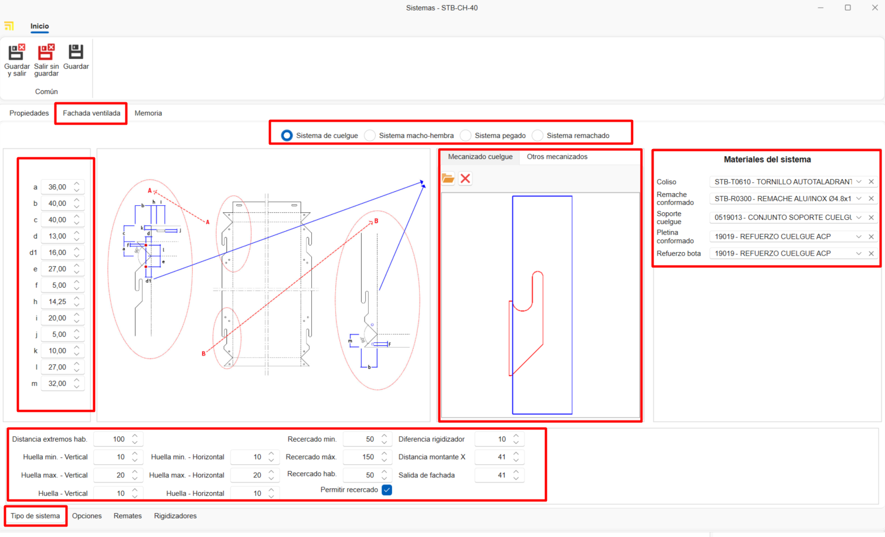
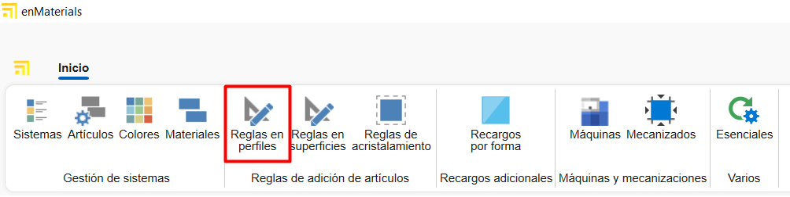

Creazione di materiali propri in enMATERIALS
1. Introduzione
Questo manuale ha l'obiettivo di guidare l'utente nel processo di creazione e gestione dei materiali propri in enMATERIALS. Segui le istruzioni dettagliate per garantire una corretta definizione e organizzazione dei materiali.
2. Definizione dei materiali
I materiali possono essere classificati in diversi tipi in base alle loro proprietà e caratteristiche. Di seguito sono descritti i principali tipi:
2.1. Tipi di materiali
- Pezzi: Si calcolano per unità e sono i materiali più comuni e semplici da definire.
- Barre: Si calcolano per metro lineare e richiedono informazioni aggiuntive, come la lunghezza.
- Superfici: Si calcolano per metro quadrato e possono includere caratteristiche aggiuntive.
- Giunti: Si calcolano per metro lineare e hanno specifiche particolari per la loro applicazione.
2.2. Articoli e colori
I materiali si definiscono nella sezione "Articoli", mentre le finiture si gestiscono in "Colori" e la materia prima in "Materiali".

3. Creazione dei materiali
Per registrare un materiale, segui questi passaggi:
3.1. Definire un articolo
- Accedi alla sezione "Articoli".


- Nella scheda Generale assegna una referenza, un tipo di calcolo e un materiale.

- Organizza gli articoli per livelli utilizzando i campi "Famiglia1", "Famiglia2", ecc.

- Compila la descrizione di acquisto (per i fornitori) e quella di vendita (per i clienti).

- Assegna un materiale base trascinando un materiale dall'albero dei materiali nella barra a destra.

- Aggiungi immagini al materiale. Ottimizza le immagini per evitare rallentamenti nel database.

-
Nella sezione Informazioni Magazzino indicare per quell'articolo alcuni campi come:
-
Magazzino principale: Definisce il magazzino dove l'articolo sarà ubicato per impostazione predefinita nel sistema.
- Ubicazione: Specifica la localizzazione fisica esatta all'interno del magazzino (scaffale, corridoio, livello, ecc.).
- Montato a destinazione: Selezionando questa casella, l'articolo sarà configurato per il montaggio a destinazione per impostazione predefinita. Questi materiali appariranno nella postazione di Picking di enCONTROL.
-
Controllo stock: Attivando questa opzione, l'articolo sarà incluso nella sezione di reintegro scorte per il tracciamento dell'inventario.

Nota: La scheda "Generale" dell'articolo è uguale per tutti i tipi di calcolo.
3.2. Creazione dei colori
- Accedi alla sezione "Colori".


- Assegna una referenza, un nome e un colore o texture.

- Assegna un fornitore dalla scheda "Fornitore" trascinando il fornitore dalla finestra a destra.

3.3. Creazione di un materiale Base
- Accedi alla sezione "Materiali".


- Indica il nome, il colore e seleziona la casella "Material" affinché appaia come materia prima.

Nota: Per generare automaticamente la tavolozza RAL dei colori e il materiale base, seleziona il pulsante Essenziali nella barra "Home".


4. Gestione dei fornitori
Prima di registrare un materiale, verifica se il fornitore è già presente in ENBLAU nella sezione "Acquisti > Fornitori". Se non è registrato, crealo seguendo gli standard definiti.

5. Commerciale e magazzino
Una volta definito il materiale, completa le informazioni nelle sezioni commerciale e magazzino.
5.1. Dati di acquisto e fornitori
Assegna fornitori, unità e prezzi di acquisto per ogni colore del materiale.

Nota: Puoi aggiungere una referenza del fornitore se è diversa da quella registrata nel database.
5.2. Assegnazione delle referenze
Ogni colore e materiale avrà una referenza unica (Referenza Articolo + Referenza Colore). Trascina uno o più colori dalla scheda colori nella finestra a destra.

6. Tipologia di materiali e dati aggiuntivi
6.1. Pezzi
- Materiali singoli gestiti per unità (accessori, viti, ecc.).
- Vengono valutati per unità.
- Nella scheda "Proprietà Comune", puoi aggiungere campi aggiuntivi se necessario.

6.2. Barre
- Materiali definiti per lunghezza e altri attributi tecnici.
- Vengono valutati per metro lineare.
- Nella scheda "Proprietà Comune", indica la lunghezza della barra (obbligatorio).

- Per profili, aggiungi informazioni aggiuntive come distanza di sicurezza e sfrido minimo/massimo. Queste informazioni sono opzionali.

Nota: Sezioni come Tipologia, Ruolo, Dati Tecnici, Sconti e Regole non sono necessarie per la creazione di materiali propri, poiché sono informazioni rilevanti solo per i materiali disegnati.
6.3. Superfici
- Materiali definiti per metro quadrato (vetri, lamiere, ecc.).
- Vengono valutati per M2.
- Nella scheda "Proprietà Comune", indica altezza e larghezza della superficie.

- Nella scheda "Valutazione e dati tecnici", indica alcuni dati a seconda del tipo di superficie e della sua necessità. Ad esempio: Spessore, tipo di superficie, prezzi per M2 (seleziona la casella "M2 per fornitore" se il prezzo è calcolato per fornitore), ecc.

6.4. Giunti
- Materiali definiti per metro lineare.
- Vengono valutati per metro lineare.
- Nella scheda "Proprietà Comune", è possibile indicare la lunghezza se lo ritieni necessario.

7. Standard da seguire
Per garantire una corretta gestione, segui questi standard:
- Usa maiuscole in nomi e referenze.
- Verifica l'esistenza di fornitori e materiali prima di registrarli.
- Mantieni un formato uniforme nelle referenze di materiali e colori.
- Salva sempre le modifiche.
8. Creazione di documenti di acquisto ENBLAU
Per verificare se l'articolo è registrato, apri ENBLAU e crea un documento di acquisto:
- Crea un ordine di acquisto e seleziona il fornitore.
- Nell'ordine di acquisto cerca e aggiungi il materiale dalla finestra a destra. Trascina e seleziona il colore associato.

- Verifica il prezzo assegnato al fornitore.

- Se il materiale ha più di un fornitore assegnato, puoi selezionare il fornitore desiderato con un doppio clic sul fornitore.
9. Creazione di sistemi e materiali enCLAD
Creazione di sistemi e materiali per facciate ventilate in enCLAD.
9.1. Sistemi
Dalla finestra iniziale, nella barra superiore, accedere a Sistema.

- Per creare un nuovo sistema, selezionare Nuovo nella barra superiore.

9.1.2. Proprietà
Dalla scheda Proprietà, situata nella parte inferiore, si definiscono i seguenti campi del sistema:
- Nome
- Descrizione
- Fornitore
- Famiglia 1 e 2 (organizzazione per livelli)
- Immagine
- Stato: Attivo, Disabilitato temporaneamente o Fuori catalogo.
- Tipologia del sistema
In questo caso, spuntare la casella Facciata ventilata.

Dalla scheda Articoli correlati, nella parte inferiore, viene visualizzato l'elenco dei materiali collegati al sistema.

9.1.3. Facciata ventilata
Dalla scheda Tipo di sistema, nella parte superiore, verrà visualizzata una finestra dove è possibile selezionare il tipo di sistema:
- Sistema a sospensione
- Sistema maschio-femmina
- Sistema incollato
- Sistema rivettato
Nella finestra laterale sinistra vengono definiti i parametri specifici del tipo di sistema.
Nella finestra inferiore vengono definiti altri parametri comuni tra i diversi tipi di sistema, come:
- Distanza estremità abituale
- Impronta minima – Verticale
- Impronta massima – Verticale
- Impronta abituale – Verticale
- Impronta minima – Orizzontale
- Impronta massima – Orizzontale
- Impronta abituale – Orizzontale
- Contorno minimo
- Contorno massimo
- Contorno abituale
- Permetti contorno (casella)
Nella finestra centrale viene mostrato il design della facciata ventilata corrispondente al tipo di sistema selezionato.
Se il tipo di sistema è Sistema a sospensione, viene abilitata una finestra aggiuntiva per la definizione del design della lavorazione:
- Scheda Lavorazione sospensione
Permette di importare il disegno in formato.dwg/.dxf. - Scheda Altre lavorazioni
Permette di definire la lavorazione tramite parametri.
Nella finestra laterale destra, Materiali del sistema, si aggiungono gli articoli corrispondenti al sistema tramite campi a discesa:
- Guida scorrevole
- Rivetto sagomato
- Supporto di sospensione
- Piattina sagomata
- Rinforzo staffa

ℹ️ Nota: A seconda del tipo di sistema selezionato, verranno abilitati parametri diversi.
Dalla scheda Opzioni, nella parte inferiore, verrà visualizzata una finestra con le opzioni di angolo disponibili a seconda del tipo di sistema.

Dalla scheda Remati, nella parte inferiore, verrà visualizzata una finestra dove definire:
Opzioni di remate: Definire le opzioni di remate per il sistema nella distribuzione delle opzioni.
- Coronamento
- Remate inferiore
- Chiusura della camera
- Finestra architrave
- Finestra davanzale
- Finestra stipite
Valori: Definire i valori per ogni opzione selezionata.
Pieghe: Definire la lunghezza e la rotazione delle pieghe per ogni valore selezionato.

Dalla scheda Irrigidimenti (disponibile solo per sistemi di tipo sospensione), viene visualizzato l'elenco dei materiali di tipo irrigidimento collegati al sistema.

9.1.4. Clonare sistemi
Da Sistemi, nella barra multifunzione superiore, è disponibile l'opzione Clona.
Questa funzionalità copia tutte le proprietà del sistema selezionato nell'elenco.


9.2. Definizione articoli enCLAD
Definire gli articoli dal modulo articoli:
Creare un nuovo articolo:
1. Generale
Compilare i campi delle informazioni generali in base al tipo di calcolo selezionato:
- Barra
- Pezzo
- Giunto
- Superficie

ℹ️ Nota: È obbligatorio indicare il sistema di facciata ventilata a cui sarà collegato il materiale.
2. Proprietà comuni
Compilare i campi delle proprietà comuni.
A seconda del tipo di calcolo del materiale, appariranno campi diversi.
Esempi:
- Barra

- Pezzo distanziatore

3. Ruolo
Spuntare il tipo di ruolo del profilo (solo per articoli di tipo barra) e definirne il valore nella sezione facciata ventilata.

4. Dati tecnici
Importare il file .dwg/.dxf del materiale e definire le dimensioni del disegno, come:
- Dimensioni interne
- Dimensioni esterne
- Profondità
- Punto di inserimento
- Altri parametri

ℹ️ Nota: La scheda Dati tecnici è disponibile solo per i tipi di calcolo barra e giunto.
5. Regole
Assegnare una regola al profilo (solo per barre), trascinando una regola precedentemente definita dalla finestra laterale destra inferiore, nella scheda Regole.

6. Commerciale e stock (assegnare colori)
Ogni colore e materiale avrà un riferimento univoco (Riferimento Articolo + Riferimento Colore). Trascinare uno o più colori dalla scheda colori nella finestra destra, dalla scheda Commerciale e stock.
ℹ️ Nota: Informazioni su come creare nuovi colori andare a 3.2. Creazione di colori.
9.3. Definizione delle regole
Dalla sezione iniziale, accedere all'elenco Regole di aggiunta articoli e selezionare Regole nei profili.

Creare una Nuova regola nei profili.
1. Proprietà
Compilare i campi delle proprietà della regola:
- Nome
- Descrizione
- Famiglie (livelli di cartelle)

2. Articoli correlati
Correlare gli articoli di tipo barra trascinandoli dalla finestra laterale destra in Articoli.

3. Sistemi restrittivi
Indicare i sistemi da restringere per quella regola, trascinandoli dalla finestra laterale destra in Sistemi.

4. Accessori
Indicare l'opzione e/o l'articolo che verrà generato, trascinandolo dalla finestra laterale destra in Accessori.

ℹ️ Nota: È possibile definire una configurazione diversa per ogni tipo di calcolo dalla scheda corrispondente nella parte inferiore della finestra.
10. Conclusione
Seguendo questo manuale, potrai registrare e gestire i materiali in modo efficiente nel sistema, garantendo una corretta organizzazione e ottimizzazione dei processi di acquisto e vendita.
 Español
Español
 English
English
 Italiano
Italiano
 Português
Português